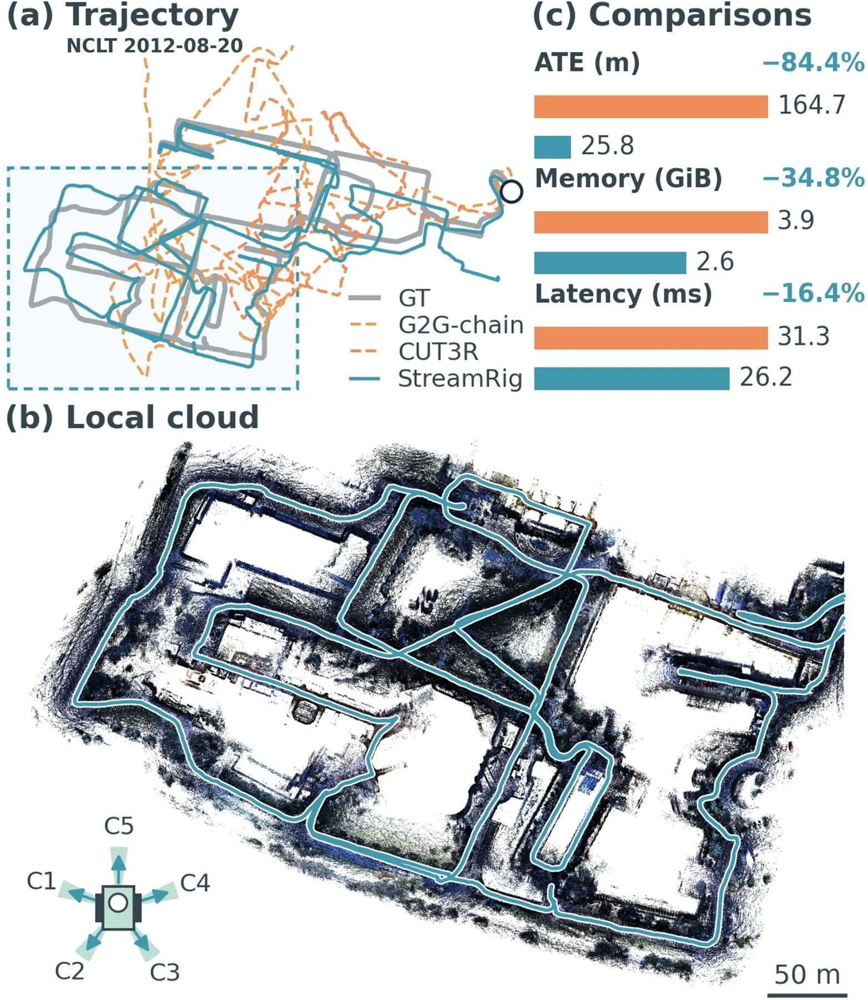
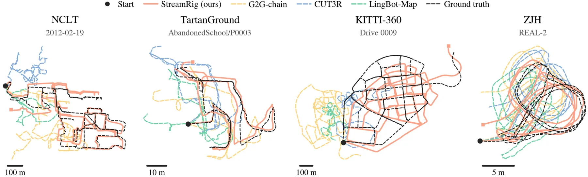
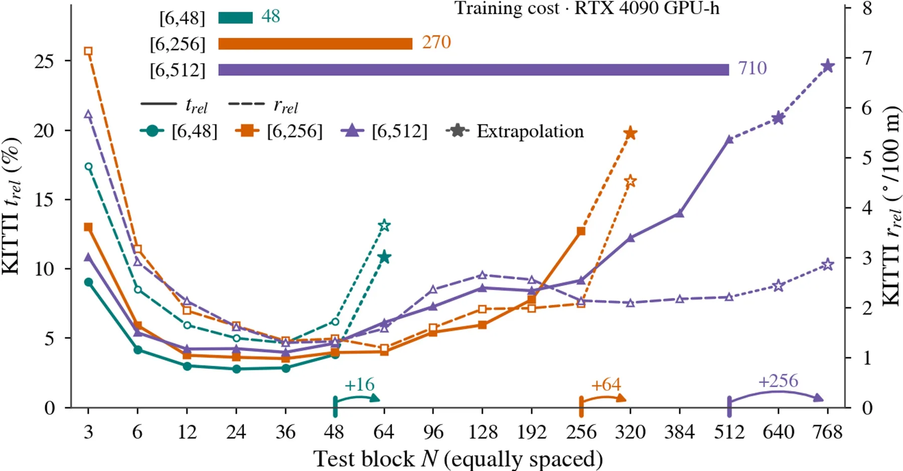

StreamRig：利用 rig 内几何做流式多相机里程计
StreamRig: Exploiting Intra-Rig Geometry for Streaming Multi-Camera Odometry
首个把冻结多视图 3D 基础模型接到因果流式多相机里程计的框架：74.6M 可训参数、相对位姿唯一监督；四套 rig 上漂移最低，五相机推理 26.2 ms/2.6 GiB 优于单目 CUT3R 的 31.3 ms/3.9 GiB。
drift
latency
params
memory
作者、单位与技术谱系 · Research context
作者与单位
研究脉络
- G2G（Wei et al.）方法基座关系：Stage I 的组重定位直接承接第一作者前作 G2G 的“冻结骨干 + 轻量模块估计两组图像间刚性变换”的形式。[论文第 II 节、参考 [18]]
- MapAnything冻结前端关系：冻结的多视图基础模型 MapAnything 提供几何落地特征，是系统的感知前端。[论文第 III-A、IV-D 节]
- 本篇推进：冻结基础模型的因果多相机里程计本篇推进关系：首次把冻结多视图基础模型接到因果流式多相机 rig 里程计，并给出数据高效的两阶段迁移配方。[论文贡献列表]
合作网络
- StreamRig 官方代码仓库论文作者 → GitHub WeiYuFei0217/StreamRig关系：官方代码[GitHub 仓库]
- 对 MapAnything 的依赖关系可训模块 → MapAnything 多视图前端关系：明确技术依赖[论文第 III-A、IV-D 节]
作者列表来自论文首页署名；单位名在官方 HTML 与 TeX 中均未公开，故标注待核验，未推断单位或师生关系。
方法本质拆解 · What actually changed
是不是微调？
冻结前端（MapAnything）权重完全不动；只训练三个新模块 Rig-Resampler、CausalBridge 与位姿头，共 74.6M 参数（占系统 638M 的 11.7%）。Stage I 在跨会话/跨轨迹的“组对”上做组重定位预训练，Stage II 换成因果 rig 窗口继续训练，模块与参数不变，只换输入与监督。监督仅为相对位姿，训练用已缓存的冻结特征，NCLT 模型约 48 GPU-hours（RTX 4090）。
有没有额外约束？
输入约束是已标定的 rig（内参 + 外参 E）；但标定只通过冻结前端的联合感知进入，可训模块从不接收 E、也不假定相机布局。Stage I 对输入外参加 1.5°/0.1 m 的 SE(3) 噪声、目标保持干净，使模块学会从有噪标定恢复真实 rig 几何；训练另用窗口长度 [6,48]（概率正比于 N）与位移归一化的平移损失来平衡近/远目标。
推理/后端到底做了什么？
每步冻结前端感知新 rig 一次，Resampler 压缩，其带标记 token 加入活动窗口；八层 bridge 缓存在所有层缓存更早 rig 的 K/V，一次前向（新 rig + 锚点快照）加位姿头即得锚点到当前的 SE(3)。re-anchoring 每 N 个 rig 把最后一个 rig 设为新锚点并重启窗口，轨迹由锚点到锚点的位姿复合，状态上限为 N·C·L 个 token。
方法本质是什么？
本质是把流式里程计拆成“冻结前端给出的 rig 级几何观测”与“轻量因果状态机把观测接成轨迹”两层，并用组重定位预训练教会后端如何对齐几何特征。它改变了每步的不确定性来源：不再让单目单帧承担几何恢复，而是让 rig 内已知几何约束整个观测。它没有做的是让前端自适应（前端始终冻结），也没有处理重访/退化纹理的机制。
输入已标定多相机 rig 的因果图像流，改变的位置是冻结前端之上的三个轻量模块，合并动作为锚点快照的因果注意力 + re-anchoring 复合，直接效果是有界状态下的低漂移流式里程计。

动机与问题Motivation
动机与问题
移动平台常带同步多相机 rig，但多数流式 3D 基础模型按单目设计，浪费 rig 内已知几何；把同步视图当独立帧会同时增加每步 token 与持久状态。第二个难点是从有限 rig 数据学运动估计：真机 rig 数据稀疏、布局单一，冻结预训练前端省去重学 3D 表达，却不会自动教会新位姿后端如何使用它——作者的初始化消融直接证明了这一点。
方法Method
方法总览
系统三块：冻结前端（MapAnything 接收 C 路图、由内参算的逐像素射线与外参，输出几何落地 patch 特征）、Rig-Resampler（每相机用共享可学 query 压成 16 个 latent）、CausalBridge + 位姿头（带锚点快照的因果注意力 + KV 缓存，回归锚点到当前的 SE(3)）。训练分两阶段：Stage I 在一批“组”上做组重定位预训练，Stage II 换成因果 rig 序列继续训练；推理用 re-anchoring 把状态限制在 N 个 rig 内。
关键技术细节
Rig-Resampler 把五相机 rig 从 1280 token 压到 80，且参数不随相机数增长。CausalBridge 对 rig 内注意力不设限、跨 rig 因果；为让锚点与被查询 rig 互相看到，给每个查询复制一份锚点 token（anchor snapshot），并把 token 打上相机/组/锚点嵌入，不使用时间位置编码，顺序靠因果 mask 表达。训练只用相对位姿损失（RMS 弦旋转 + 位移归一化平移，λ_R=5、λ_t=1、ε=0.1 m），并混合 [6,48] 的窗口长度与随机 stride；Stage I 对输入外参加 1.5°/0.1 m 噪声以学纠偏。

实验Experiments
实验设置
四套 rig：NCLT 五相机周视 Segway（2 条 6 km 序列）、TartanGround 四路 90° 环（10 场景）、KITTI-360（0.59 m 立体 + 2 鱼眼）、ZJH 人形机器人 rig（训练仅用仿真：131 条行走轨迹、25 个由真实扫描 3DGS 重建的室内环境；真机三序列零样本评测）。指标为 100–800 m（NCLT/KITTI-360）与 10–80 m（TartanGround/ZJH）段的 t_rel/r_rel 与整段 ATE。对照单目流式 CUT3R/STream3R/LingBot-Map/HorizonStream 与 rig 感知非流式 Reloc3R/Rig3R/MapAnything/G2G-chain。
实验数字与比较
NCLT 上 t_rel 2.77%、r_rel 1.39%、ATE 28.4 m，优于次优 G2G-chain 的 6.08%/3.54%/106.3 m 与单目 CUT3R 的 9.51%/4.80%/241.2 m；TartanGround t_rel 12.70% 对 G2G-chain 16.40%；KITTI-360 2.59%/0.98%（STream3R 的 ATE 53.6 m 更低）；ZJH 真机 t_rel 3.48%，旋转漂移比次优 CUT3R 低 63%。相机数对照：单目 4.84% → 立体 3.59% → 全 rig 2.59%。开销：五相机 26.2 ms/2.6 GiB 对单目 CUT3R 31.3 ms/3.9 GiB，其中感知占 24.9 ms、bridge + 位姿头仅 1.3 ms；训练约 48 GPU-hours（RTX 4090）。
消融/失败边界
去掉两阶段初始化（不 warm-start）t_rel 从 2.77% 暴涨到 41.37%（约 4.6–14.9×），说明仅靠冻结几何特征无法直接读出位姿；静态锚点相对每查询快照使漂移上升 9–38%；固定窗口 48 相对混采上升 15–30%；up-to-scale 平移损失在 NCLT 上 6.87%。re-anchoring 距离呈 U 形：标准配置在 N=24 附近最优，N=64 超出训练范围后急剧变差（训练窗口越长，上升段越右移，但最小漂移不改善）。
局限与迁移Limitations & Transfer
局限与待核验
作者明确写的局限与未来工作：同会话重访检索在 NCLT 上只有初步迹象、未做定量评测，接受阈值仍需逐会话调；未来要把可迁移回环触发与重访整合进流式状态，并联合细化位姿与稠密几何。待核验：ZJH 只测三条真机序列，统计强度有限；“更长训练窗口延长可用锚点范围但不改善最小漂移”的结论依赖单数据集（NCLT）扫描。
与你研究路线的关系
可直接迁移的是“冻结几何前端 + 轻量时序后端 + 相对位姿唯一监督”的分工，以及给每个查询复制锚点、用因果 mask 表达顺序而不加时间编码的设计——这对我们做多传感器/多相机流式状态估计时的状态设计和缓存策略很有参考价值。re-anchoring 距离的 U 形证据也给出一个具体命题：状态长度与单次估计噪声之间存在可测折中。



